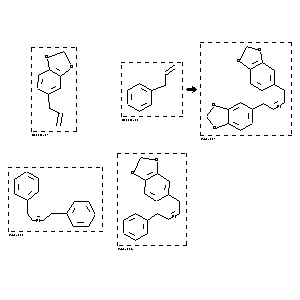

|  |
| FA | RX(1); FLST(1); RX(1) |
Reaction (1 of 1)
| Reaction ID | 4862860 |
| Reactant BRN | 136380; 1098501 |
| Reactant | 5-allyl-benzo[1,3]dioxole; allylbenzene |
| Product BRN | 7939142; 2206992; 7928961 |
| Product | C18H16O4; cis-1,4-Diphenylbut-2-en; 5-(4-phenyl-but-2-enyl)-benzo[1,3]dioxole |
| No. of Reaction Details | 1 |
Reaction Details (1 of 1)
| Reaction Classification | Preparation |
| Catalyst | Cl2(PCy3)2Ru=CHPh |
| Solvent | CH2Cl2 |
| Time | 6 hour(s) |
| Temperature | 45 - 50 |
| Comment | Title compound not separated from byproducts |
| Citation Pointer | 6095331; Journal; Giger, Thomas; Wigger, Maria; Audetat, Stephan; Benner, Steven A.; SYNLES; Syn.Lett.; EN; 6; 1998; 688-691; |
Reference (1 of 1)
| Citation Number | 6095331 |
| Document Type | Journal |
| Authors | Giger, Thomas; Wigger, Maria; Audetat, Stephan; Benner, Steven A. |
| CODEN | SYNLES |
| Journal Title | Syn.Lett. |
| Language Code | EN |
| Number | 6 |
| Publication Year | 1998 |
| Page | 688-691 |